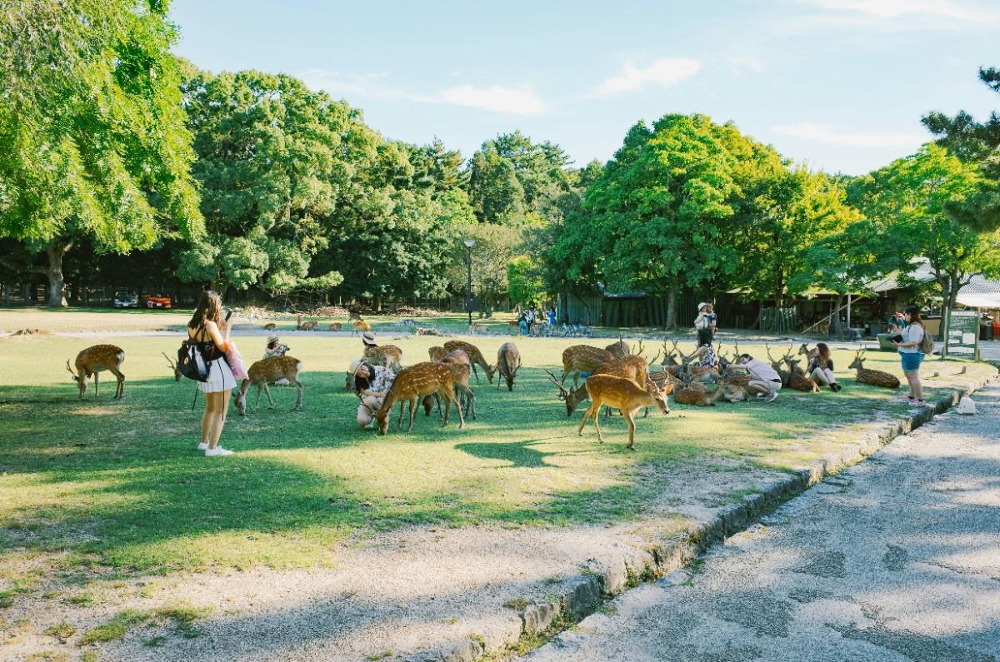
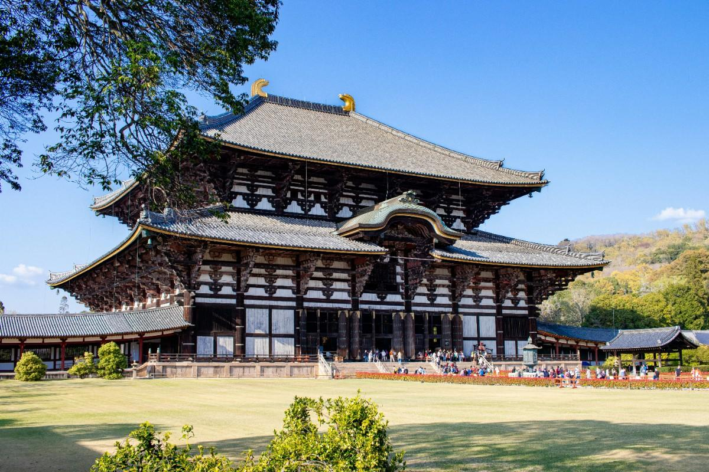
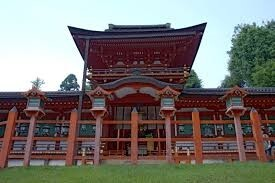

A peaceful city known for its friendly deer and historic temples.
Nara is one of Japan’s oldest cities and is known for its peaceful atmosphere, historic temples, and free-roaming deer. The city feels calm and open, with large parks and traditional architecture defining its landscape. It’s less crowded than Kyoto, making it feel more personal and quiet



Historic, peaceful, unique
Nara is perfect for a relaxed cultural experience. It’s ideal if you want something traditional but less overwhelming than bigger tourist cities.